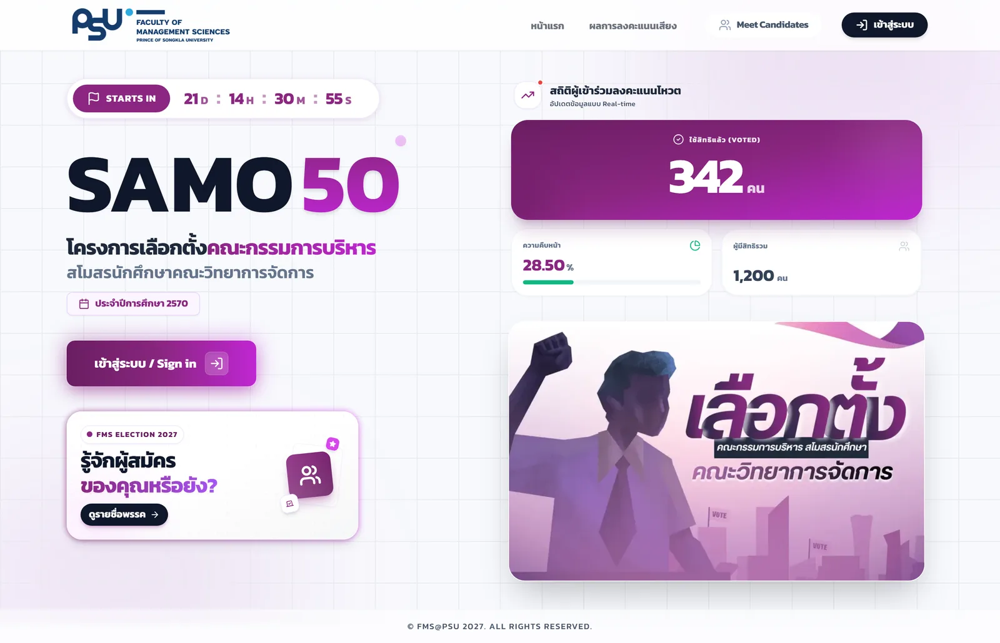

Case study · 2026
An online election system
that can prove the count is untouched
FMS Online Voting System — the voting system for the student council of the Faculty of Management Sciences, Prince of Songkla University. Students sign in with PSU Passport and vote once each. Every ballot is encrypted separately from the voter's identity and threaded into a hash chain that can be verified across the whole table after the fact.

imported through the university API
roughly 51% turnout
built solo
across 283 files
switchable from admin
15 smoke + 35 e2e
01 — Context and problem
Why an election system is not just a form with a submit button
I was responsible for the whole project on my own: talking through requirements with the election committee, designing the database, designing how ballots are stored, building every page, and writing the handover documentation for next year's council team — none of whom are programmers.
The result has to be credible
If the count comes out close, there has to be a technical way to prove nobody altered it — not just an appeal to trust the committee.
The ballot has to stay secret
An online system that stores “this user chose this party” in one row means anyone with database access knows everything — which breaks the principle of a secret ballot.
Double voting has to be genuinely impossible
It has to hold even when a user submits from several tabs at once, not only when the network is slow and luck is on our side.
It has to survive being handed on every year
The council changes annually and nobody there writes code, so the year, the candidate list and the look of the site all have to be changeable without touching code.
A site people actually want to open
The usual officious government look puts students off entirely. It had to feel contemporary and genuinely work on a phone.
Results must stay sealed until the hour
Partial counts sway the people who have not voted yet, so results are closed off at the API layer, not merely hidden behind a button in the UI.
02 — Architecture
The system map
A single Next.js App Router app serves the public pages, the admin console and the API,
talks to PostgreSQL through Prisma, and deploys with Docker under the
/fms-ovs subpath.
Users
↓
Application — Next.js 14 (Docker, /fms-ovs subpath)
↓
Database — PostgreSQL + Prisma (8 models)
↓ only in the event of a dispute
03 — The hardest part
Anonymous ballots that can still be checked for tampering
Designed from scratch with nothing but node:crypto — not one new dependency. The
goal was two things that normally contradict each other: fully auditable after the fact, yet
impossible to trace back to a voter.
Separate the identity from the choice
Casting a vote writes to two different tables — it stamps isVoted on the user, and drops an encrypted ballot into the Ballot table. No key joins the two. The column that once linked them was deliberately deleted.
Encrypt the ballot with RSA-OAEP + a nonce
The plaintext is { c: candidateId, n: 128-bit nonce } — the nonce means two ballots for the same party never produce the same ciphertext, closing the dictionary-guessing gap you get when candidate ids only take a handful of values.
Thread them into a hash chain with HMAC
Every ballot stores prevHash and rowHash = HMAC(secret, prevHash‖payload‖seq). Delete, insert or edit a ballot in the middle of the table and the chain breaks at exactly that point — verifiable across the whole table with one script.
Timestamps leak too, so only the hour is kept
A precise timestamp on a ballot can be joined against the moment a user pressed vote to pair them back up. So the Ballot table keeps only a coarse hour bucket; the precise time stays with the user, where it is not a secret.
The decryption key is never on the server
A key ceremony is held once a year on an offline machine; the private key is printed on paper and split between the staff and the faculty advisor. The server holds only the public key — seize the server and the ballots still cannot be decrypted.
Database-level rights: the app can only INSERT
In production, grants give the app's database user permission to add ballots and nothing else — no UPDATE, no DELETE. A finished election cannot be altered even through the app's own code.
Fail closed — if the key variables on the server are incomplete, the vote endpoint answers 503 immediately. There is no fallback that stores the choice in readable form, ever. The system would rather stop accepting votes than accept a ballot that is not secret.
04 — Concurrency
One person, one vote — when two requests arrive at the same instant
The naive approach is “check whether they have voted, then save”, which leaves a gap between the two steps (TOCTOU). Submit from two tabs at once and both can pass the check and both get saved. The answer is a single transaction that gives three guarantees at the same time.
// (a) TOCTOU one-shot · (b) chain serialization · (c) tally — in one transaction const outcome = await db.$transaction(async (tx) => { // (a) compare-and-set: only one request can flip the flag → count === 1 const claim = await tx.user.updateMany({ where: { id: user.id, isVoted: false }, data: { isVoted: true, votedAt }, }); if (claim.count === 0) return "ALREADY_VOTED"; // (b) SELECT ... FOR UPDATE on the ChainHead row — colliding requests queue up, // so every ballot gets a genuinely correct prevHash and the chain never breaks await appendBallotTx(tx, { payload, hourBucket, chainSecret }); // (c) tally atomically await tx.candidate.update({ where: { id: parsedId }, data: { score: { increment: 1 } }, }); return "OK"; });
Encrypt before entering the transaction
The ciphertext does not depend on the state of the chain, so it can be computed beforehand — which keeps the row lock held for the shortest time possible.
Proved by a test, not by an argument
An e2e test fires two simultaneous requests from one user: exactly one must succeed, one must be rejected, and the total must go up by exactly one.
A rate limit on top
Requests per user are capped on the vote and login endpoints to stop rapid-fire attempts, even though the double-vote guard already handles them.
05 — The theme system
The look of the entire site changes from admin, in one click
6 families, 23 themes. Each family has its own layout for every page — this is not a colour swap. All of it comes from a single palette file per family, so adding a new theme means editing 3 places and the rest flows through the whole system.
FMS Election · Original
Choose one.
Every colour on this card comes from six tokens. Nothing else changes.
23 themes, the same page
One page, one screenshot each, nothing else changed. Drag it, use the arrows, or pick a colour off the rail — the rail is the 23 accent values themselves, straight out of the palette files.
Two token layers
Layer 1 is theme-level colour, layer 2 is element-level variables, with a rule that any colour variable must reference a token — never a raw hex value.
The preview has to match reality
What the preview renders and what production renders must map to the same values, guarded by 7 invariants — because a preview that lies is more dangerous than having no preview at all.
You can really try it before choosing
The preview page walks the whole flow (home → login → vote → success) without touching the database, so a non-developer decides by using it, not by looking at a still image.
06 — UX / UI
The criteria I judged the design against
Set before starting, and every one of them checkable rather than a matter of feel. The principle is beauty from basic craft, not from gimmicks — no 3D, no particles, no artificially long loading screens for the sake of looking cool.
| Dimension | What it has to pass |
|---|---|
| Typography | No more than 3 levels per view · line-height 1.1 for headings, 1.6 for body · statistics use tabular-nums so digits do not jitter while counting |
| Spacing | A 4/8px rhythm throughout · generous whitespace · nothing colliding or accidentally touching an edge |
| Colour | Body contrast ≥ 4.5:1, large headings ≥ 3:1 · no more than 3 colours per view |
| Motion | Only where it carries meaning · 150-300ms ease-out · respects prefers-reduced-motion |
| Hierarchy | Every page answers “what is this, what do I do next” within a second · one primary CTA, clearly dominant |
Mobile-first as a gate, not as a slogan
Every page is reviewed at 375px before desktop, because nearly all real users voted from a phone while walking around the faculty — mobile has to be designed, not shrunk down from desktop.
Decisions I can account for
A single-party race needs 3 options
When only one party stands, allowing nothing but “choose” is coercion. So the ballot becomes approve / reject / abstain, with fixed semantic colours that do not change with the theme, because what a colour means matters more than how well it fits the palette.
Results before the hour need a designed “locked” page
Not a hidden menu that leaves people confused: whoever arrives should know why they cannot see it yet and when they can. The count itself is closed at the API layer, with tests proving it does not leak.
Never hide important content behind an animation
A rule made after being burnt — the ballot once sat at opacity 0 waiting for a reveal, the reveal failed on some machines, and the entire ballot vanished. Since then the ballot, the party list and the results may not depend on a JS reveal, and it is checked against real computed style.
Secondary buttons must not steal the scene
A lesson from the results page, where the secondary button outweighed the primary CTA and people went the wrong way. Fixed by making the secondary button lighter, not the primary one heavier.
Every theme gets its own ritual
Verdure closes with a wax seal being pressed · Receipt Paper is a receipt roll dropping into the box · Gumroad is loud neo-brutalist — because the second you finish voting should feel like your vote was counted, not like the word “success” appeared.
Cutting the editor I had built by hand
The system once had a Canva-like editor for admins to drag and drop their own layouts. It got far, and I cut it — what users actually needed was a variety of ready-made looks, not a design tool with nobody to maintain it.
07 — Handover
Designed to keep working without me
The council team changes every year, so the annual work is designed as part of the product rather than as knowledge living in one person's head.
A readiness button with 14 checks
Verifies the config, the keys, the dates, the lists and the theme before the polls open. Read-only; it writes nothing to the database.
Audit log + protection against misclicks
Every admin action is recorded, and the reset button is locked while voting is open — the system has to be stopped first.
A script for rolling over the academic year
preflight → archive last year → import the new roll → set the dates and pick a theme in admin → run that year's new key ceremony.
A test database that cannot touch the real one
The e2e suite creates its own database on a separate port, and every delete or reset command has a guard that checks the database name first.
08 — Quality
The gates every deploy has to pass
| Layer | What it covers |
|---|---|
| build | All 33 pages must compile with no errors |
| smoke · 15 cases | Public APIs leak no counts · admin APIs answer 401 both without auth and with a forged cookie · login hits the 429 rate limit · voting requires a session · role and permission invariants |
| e2e · 35 cases | The full voting round trip · double voting and simultaneous submissions · abstaining · the polls-closed page · the admin console |
| readiness | The final gate in admin: 14 checks before the polls actually open |
The gate order is build → smoke → e2e → readiness, and the documentation to match is all there: a deploy checklist, a runbook for the administrator, a database request form for the IT department, and a pitfall log of 125 entries recording every lesson that hurt, so none of them happens twice.
09 — Straight talk
Things worth saying plainly
- Status — the system was used in a real student council election: 3,119 eligible voters imported through the university API with no bad records, and roughly 1,600 ballots actually cast
- AI helped build it — I used AI as a thinking partner throughout, while every architectural and security decision was mine, and I wrote up my working rules and a pitfall log so the same mistakes do not return
- Every image on this page — captured from the system's preview mode, which runs on entirely fictional data; no real name or student ID appears anywhere